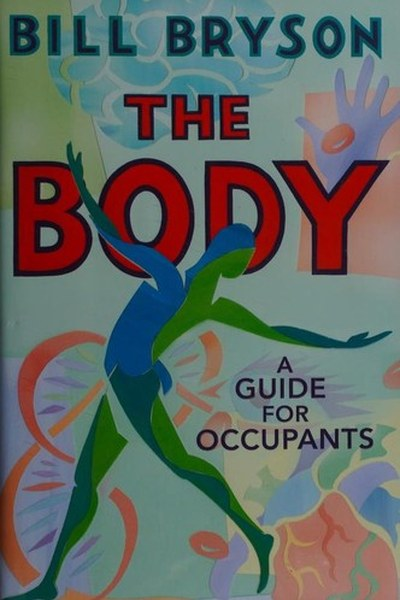

Library › Self-Improvement
The Body: A Guide for Occupants — Summary & Key Lessons

The extraordinary story of the human body — how it works, and how fragile and brilliant it is.
📖 OPEN THE FULL INTERACTIVE BREAKDOWN →🌐 Read it in Hindi, Hinglish, Gujarati, Tamil & 22 more languages — free, with audio.
💡 The Big Idea
The human body is the most complex object in the known universe — trillions of cells, a brain that builds itself, an immune system that can kill you as easily as save you. Bryson walks through each system with his trademark curiosity: how it works, how we discovered it, and how much we still don't know. The book's deeper message: your body is a miracle you take for granted — understand it, respect it, and marvel at it while you have it.
🧠 The 6 Key Lessons
Lesson 1: Your Body Is a Colony of Trillions
The Cell
Bryson's opening wonder: you are not one being but a colony — trillions of cells, each a tiny machine, cooperating long enough to make a person. Your cells replace themselves constantly; the 'you' of seven years ago is mostly gone. The lesson: you are a process, not a thing — and processes can be maintained, repaired and improved.
📖 Example: The cells lining your stomach are replaced every few days, your skin every month — your body is a renovation project running continuously. The practical edge: 'your body is a colony of trillions' is not a one-time decision — it's a habit that compounds with… Read the full example →
⚡ Do this: Treat your body like the process it is: one small maintenance habit (sleep, movement, food) improved this week compounds across years.
Lesson 2: The Heart Works Harder Than You Think
The Heart
Bryson reports the numbers: your heart beats about 100,000 times a day, pumping 2,000 gallons — a lifetime of about 2.5 billion beats without a pause for maintenance. The lesson: the body's default design is extraordinary endurance; the failures are almost always from the choices around the engine, not the engine itself.
📖 Example: Heart disease remains the world's biggest killer — not because hearts are weak, but because lifestyle attacks a design built for activity and modest food. Here's the part that usually gets missed: 'heart works harder than you think' works quietly. You won't… Read the full example →
⚡ Do this: Do one thing this week that your heart was designed for: 30 minutes of continuous movement.
Lesson 3: The Brain Is the Last Frontier
The Brain
Bryson's tour of the brain is humbling: 86 billion neurons, a hundred trillion connections, and we still don't understand how consciousness emerges. The practical lesson: the most powerful tool you own is the one you understand least — protect it, feed it, and don't trust its certainty too much.
📖 Example: The brain consumes 20% of your energy while being 2% of your body — it's expensive to run and worth protecting accordingly. The real test of this lesson is a bad day: the principle that survives a crisis, a tight deadline and a doubting colleague is the one… Read the full example →
⚡ Do this: Protect your brain's basics this week: one full night of proper sleep and one session of deep, uninterrupted focus.
Lesson 4: The Immune System Is a Genius With a Temper
The Immune System
Bryson explains how the immune system recognizes trillions of possible invaders and remembers them for decades — and how sometimes it attacks the body itself (autoimmune disease). The lesson: your body has a brilliant defence system, and its best friend is basic maintenance — sleep, nutrition, vaccination, and not overworking it.
📖 Example: Vaccines work because the immune system's memory is extraordinary — it can recall an enemy it met decades ago. In practice, 'immune system is a genius with a temper' shows up in tiny daily choices long before it shows up in outcomes — the choice is… Read the full example →
⚡ Do this: Update one health basic this month: a vaccine, a checkup, or a consistent sleep schedule.
Lesson 5: We Know Less Than We Think
The Unknown
Bryson's recurring theme: medicine has made astonishing progress and still knows shockingly little — why we sleep, why we age, what most of the genome does. The lesson: humility is the correct posture toward health. The body is a masterpiece we're still reverse-engineering; treat it with respect, not certainty.
📖 Example: The placebo effect works even when people know it's a placebo — we understand less about healing than we pretend. Most people nod at this principle and change nothing. The gap between agreeing and acting is where the whole game is won or lost. Read the full example →
⚡ Do this: For one health claim you currently believe, check the evidence quality. Keep what's proven; question the rest.
Lesson 6: The Body Is a Story of Adaptation
The History
Bryson's history of medicine shows how each era's 'certainty' — bleeding, leeching, lobotomy — was later seen as barbarism. The lesson: today's certainty is tomorrow's cautionary tale. The wisest stance toward your body is to combine the best evidence with the oldest wisdom: move, sleep, eat simply, stay curious, and be grateful.
📖 Example: Doctors once prescribed cigarettes and cocaine; the 'expert advice' of each generation is always partially wrong. The uncomfortable truth about this lesson: it requires doing the boring version first — the unglamorous reps that nobody claps for. Read the full example →
⚡ Do this: Adopt one evidence-backed, timeless habit (movement, sleep, real food) and one piece of modern medical care (checkup, vaccine).
✅ 5-Step Action Plan
- Improve one body-maintenance habit this week.
- Do 30 minutes of continuous movement for your heart.
- Protect one full night of sleep and one deep-focus session.
- Book one overdue health basic: checkup or vaccine.
- Question one health claim you currently believe.
⚠️ When This Doesn't Work
Bryson's awe is delightful — and his 'we know less than we think' humility can slide into fatalism about health: 'nobody really knows, so why bother?' The Vasa is the perfect counter-metaphor: a masterpiece of design that sank because the parts were beautiful and the whole was unbalanced. The caveat: the body is the opposite — the parts are imperfect and the whole works astonishingly well when you respect its basics (sleep, movement, food, connection). Wonder is a good start; the boring maintenance is the actual medicine.
💀 The Graveyard Proves It
⛵ The Vasa — The King's Warship That Sank in 20 Minutes — in the Harbor. Burn: Sweden's flagship, maiden voyage. Read the full case study →
💬 Best Quotes from The Body: A Guide for Occupants
- “The body is a universe of wonders.”
- “You are, at this moment, a community of trillions of cooperating organisms.”
- “We are all just slowly dissolving — the body is a constant process of breaking down and rebuilding.”
Interactive version: mark lessons as read, listen in your language, share quote cards.